종류 : Lager(라거) ALC : 4.5%
올 뉴 카스 프레시는 카스만의 콜드브루 공법을 통해 맥주의 상쾌함과 깔끔한 맛을 한층 더 극대화하였습니다. 톡 쏘고 상쾌한 맛으로 대한민국에서 가장 사랑받는 카스 프레시는 여러분의 인생 곳곳의 즐거운 순간들과 함께했을 때 가장 맛있게 즐길 수 있는 맥주로 새롭게 돌아왔습니다.
이번 혁신적인 디자인 변신은 카스만의 뛰어난 제조 기술과 품질 보증에 대한 자신감을 투명하게 있는 그대로 보여줍니다. 0°C에서 72시간 동안의 까다로운 Cold Brew 과정을 거쳐 탄생한 올 뉴 카스는 맥주 극강의 짜릿함을 더욱 오랫동안 유지시켜 줍니다. 오비맥주 최초로 변온잉크를 활용한 육각형 모양의 ‘쿨 타이머’ 온도센서는 언제 어디서나 소비자들이 소중한 사람들과 카스를 즐기기 위한 최적의 온도인지를 손 끝을 통해 확인시켜 드립니다.
과감한 혁신과 변화를 두려워하지 않는 카스는 국내를 뛰어넘어 전세계 소비자들을 서로 연결시켜 주는 대한민국 대표 맥주 브랜드입니다.
종류 : Lager(라거) ALC : 4.0%
카스 라이트는 출시 이후 전체 맥주 가정 시장내 10위안에 들어오는 안정적인 점유율(3%)을 유지할만큼 꾸준히 소비자들의 탄탄한 관심과 사랑을 받고 있는 제품으로 인지되어 왔습니다.
최근 더욱 확대되고 있는 헬스 앤 웰니스(Health & Wellness) 트렌드의 부상에 따라 New CASS Light ZERO SUGAR가 새롭게 런칭하였습니다.
새로워진 CASS Light ZERO SUAGR는 카스 프레시 대비 칼로리는 33% 낮고 도수 역시 4.0% 부담 없는 도수의 맥주로 언제 어디서나 가볍게 즐기실 수 있습니다.
구매하러 가기종류 : 비알코올 맥주 ALC. : 0.05% 미만
카스 0.0은 카스만의 차별화된 ‘알코올 분리 공법’을 통해 맥주 본연의 맛과 향은 그대로 남겼습니다.
카스 0.0은 일반 맥주와 같은 원료를 사용하여 동일한 발효 및 숙성 과정을 거칩니다. 마지막 여과 단계에서 ‘스마트 알코올 분리 공법’을 통해 알코올만 추출하여, 카스 고유의 짜릿하고 청량한 맛을 그대로 느낄 수 있습니다.
알코올의 음용이 부담스러운 상황에서도 알코올 없이 카스의 짜릿함을 그대로 느낄 수 있어 언제 어디서나 즐길 수 있습니다.
구매하러 가기본 제품은 성인용 음료이며 1% 미만의 알코올을 함유하고 있습니다.